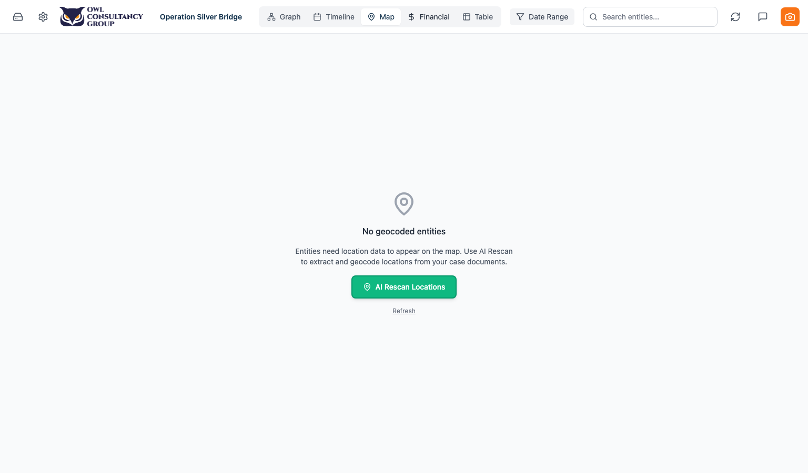

Purpose: Step-by-step guide for using and verifying the 14 features recently implemented in the OWL Investigation Platform. Each section explains what was built, where to find it, exactly how to use it, and how to confirm it's working.
Prerequisites: You should be logged in as
neil.byrne@gmail.comwith the “Operation Silver Bridge” case loaded.
- Correct Transaction Amounts in Financial Dashboard
- Bulk Categorization in Financial Dashboard
- Sub-Transaction Grouping
- Filter by Entity in Financial Dashboard
- Entity Summary on Case Dashboard
- AI Chat Analyses More Documents
- Faster Table with Bulk Merge & Edit
- Fix / Remove Locations on Map
- Document Viewer Opens in Front (Portal Fix)
- AI Creates Fewer / Less Noisy Entities
- AI Insights — Generate, Accept & Reject
- Clarified “Case Files” vs “All Evidence” Sections
- Export Financial Transactions to PDF
- Save AI Chat Responses as Case Notes
1 Correct Transaction Amounts in Financial Dashboard
What it does: Lets you fix incorrect dollar amounts on any transaction directly in the table, with a full audit trail (original amount preserved, correction reason recorded, visual indicator).

How to use it
- Navigate to the Financial view (click the dollar icon in the left sidebar).
- Find any transaction in the table and click on its dollar amount.
- The amount cell transforms into an editable number input.
- Type the corrected amount and press Enter (or click the green checkmark).
- A small prompt appears asking: “Why is this being corrected?” — type your reason.
- Click Save.
How to verify it worked
- The amount cell now shows the new value.
- A small amber pencil icon appears next to the corrected amount.
- Hover over the pencil icon — a tooltip shows the original amount, your correction reason, and who made the correction.
- The original amount is preserved in the database and never lost.
2 Bulk Categorization in Financial Dashboard
What it does: Lets you select multiple transactions at once and assign them all to the same category in one action.
How to use it
- In the Financial view, use the checkboxes on the left side of the table to select two or more transactions.
- A batch action toolbar appears above the table showing how many transactions are selected.
- In the toolbar, click the category dropdown (it has a Tag icon).
- Select the category you want to assign (e.g., “Wire Transfer”, “Shell Company”, “Legitimate”).
- All selected transactions are immediately updated with the new category.
How to verify it worked
- Each selected transaction's category badge updates to the new category with its colour.
- You can also use the “Set From” / “Set To” buttons in the batch toolbar to bulk-assign the from-entity or to-entity on multiple transactions at once.
- Click “Clear selection” to deselect all rows when done.
3 Sub-Transaction Grouping
What it does: Lets you group related transactions under a parent transaction. For example, a $1.3M house purchase can be the parent, with $900K loan, $200K gift, and $200K fees as children.
How to use it
To create a group:
- In the Financial table, right-click on the transaction you want to be the parent.
- In the context menu, click “Group as Sub-Transaction” (has a link icon).
- The Sub-Transaction Modal opens showing the parent transaction at the top with its amount and a searchable list of all other transactions in the case.
- Check the boxes next to the transactions you want as children.
- As you select children, a running total is shown at the bottom. If the children's total doesn't match the parent amount, a yellow warning appears.
- Click “Link X Transaction(s)” to save.
To view a group:
- Parent transactions now show a ▶ chevron on the left side of their row.
- Click the chevron to expand — child transactions appear as indented rows below, each prefixed with ↳.
To remove a child from a group:
- Right-click on any child transaction (one with the ↳ prefix).
- Click “Remove from group” (shown in red).
- The child becomes an independent transaction again.
How to verify it worked
- Parent rows show the ▶ expand chevron.
- Expanding shows indented child rows with ↳ prefix.
- The running total in the modal updates as you select/deselect children.
- Removing a child makes it a standalone row again.
4 Filter by Entity in Financial Dashboard
What it does: Lets you filter the transaction table to only show transactions involving a specific person, company, or account.
How to use it
- In the Financial view, look at the filter panel at the top of the page (if collapsed, click the filter toggle to expand it).
- Find the Entity filter field.
- Start typing an entity name (e.g., “Marco Delgado” or “Solaris Property Group”).
- Select the entity from the dropdown suggestions.
- The table immediately filters to show only transactions where that entity appears as a From or To party.
You can also edit the From and To entities on individual transactions:
- Click the pencil icon on any transaction's From or To cell.
- An entity editor opens with a search field.
- Search for and select the correct entity.
- The cell updates with the new entity.
How to verify it worked
- The table row count decreases to show only matching transactions.
- Clear the filter to see all transactions again.
- The pencil icon on From/To cells opens the entity editor.
5 Entity Summary on Case Dashboard
What it does: Adds a “Key Entities” section to the Case Overview dashboard showing all entities in the case, grouped by type (People, Companies, Organisations, Banks, Bank Accounts, etc.) with their summaries, fact counts, and insight counts.

How to use it
- Navigate to the Workspace / Case Overview view (click the briefcase icon in the sidebar).
- Scroll down past the Client Profile and Uploaded Documents sections.
- You'll see the Key Entities section with:
- Tabs across the top: “All”, “People”, “Companies”, and other entity types — each tab shows a count.
- A search bar to filter entities by name.
- A sort dropdown (top-right) to sort by: Name, Type, Facts, or Insights.
- Click any tab to filter to that entity type.
- Each entity card shows: entity name, type badge, summary text, number of verified facts, and number of AI insights.
How to verify it worked
- The tabs show accurate counts per entity type.
- Clicking “People” shows only Person entities.
- Search filters in real time as you type.
- Sorting by “Facts” puts entities with the most verified facts first.
6 AI Chat Analyses More Documents
What it does: The AI chat now retrieves and analyses up to 50 documents (up from 10) and considers up to 25 verified facts (up from 10) when answering questions. The context budget was increased from 12K to 80K tokens.

How to use it
- Open the AI Chat panel (click the chat bubble icon in the sidebar, or it may already be in a side panel).
- Ask a cross-document question like:
- “What connections exist between Solaris Property Group and the Cayman Islands across all evidence?”
- “Summarize all financial irregularities found across every document in this case.”
- The AI now pulls from all documents in the case (previously it might have only used the top 10 most relevant chunks).
How to verify it worked
- Ask a question that requires knowledge from multiple documents.
- The response should reference entities and facts from different source files.
- If the response includes a pipeline trace or debug info (expand the trace section), you'll see more retrieved passages than before.
- Responses should be more comprehensive and accurate than before the change.
7 Faster Table with Bulk Merge & Edit
What it does: The entity table now uses pagination for large datasets (instead of rendering all 170+ rows at once) and supports bulk merge (select 2 entities → merge) and bulk edit (select multiple → change a property on all).

How to use it
Pagination:
- Switch to Table View in the graph panel.
- At the bottom of the table, you'll see pagination controls: first/prev/next/last page buttons and a “Showing X–Y of Z entities” indicator.
- Click the page navigation buttons to move through pages.
Bulk Merge (exactly 2 entities):
- Use the checkboxes on the left of each row to select exactly 2 entities that you believe are duplicates.
- A toolbar appears at the top. The “Merge 2” button (with a merge icon) becomes active.
- Click “Merge 2”.
- The Merge Entities Modal opens with a side-by-side comparison: choose which entity's name and summary to keep, check/uncheck individual facts and insights to include in the merged entity.
- Click “Merge Entities” to combine them into one.
Bulk Edit (2+ entities):
- Select 2 or more entities using the checkboxes.
- Click the “Bulk Edit” button (pencil icon) in the toolbar.
- A modal opens with a property dropdown, a new value input, and a preview showing what will change.
- Click “Apply” to update all selected entities at once.
How to verify it worked
- Pagination: the table loads instantly even with 170+ entities. Page controls work.
- Merge: after merging, only one entity remains. Search for the old name — it should be gone.
- Bulk Edit: after editing, all selected entities show the new value in the chosen field.
8 Fix / Remove Locations on Map
What it does: Lets you correct inaccurate AI-extracted location coordinates or remove bogus locations from the map entirely, using a right-click context menu.

How to use it
To edit a location:
- Navigate to the Map view (click the map icon in the sidebar).
- Find the location pin you want to correct.
- Right-click on the pin.
- A context menu appears with: “Edit Location” (pencil icon) and “Remove from Map” (trash icon).
- Click “Edit Location”.
- A modal appears with Location Name, Latitude, and Longitude fields.
- Correct the values and click “Save”.
To remove a location:
- Right-click the pin.
- Click “Remove from Map” (trash icon).
- The pin disappears from the map. The entity still exists in the graph — only its location data is removed.
How to verify it worked
- After editing: the pin moves to the correct position on the map.
- After removing: the pin disappears. The entity still shows up in graph/table views — only the map pin is gone.
- Refresh the map to confirm changes persisted.
9 Document Viewer Opens in Front (Portal Fix)
What it does: Previously, when viewing a document from inside a modal (like the Merge Entities modal or the Map view), the document viewer would open behind the modal, forcing you to close the modal and lose your place. Now the document viewer uses a React portal to always render on top of everything.
How to use it
- Go to the Graph view and run a duplicate entity scan (Entity Resolution tab).
- When comparing two entities for merging, click on any source document link (e.g., “View in corporate_records.pdf”).
- The Document Viewer opens as a full-screen overlay that appears on top of the merge modal.
- You can read the document, navigate pages, then close it (click X or press Escape).
- You're returned to the merge modal exactly where you left off.
How to verify it worked
- Open any modal (merge, map edit, etc.) and then open a document from within it.
- The document viewer should appear on top of the modal, not behind it.
- Closing the document viewer should return you to the modal.
10 AI Creates Fewer / Less Noisy Entities
What it does: The entity extraction prompts were tightened with strict quality rules, and a max_entities_per_chunk limit of 25 was added across all extraction profiles. The fuzzy matching threshold was raised from 0.7 to 0.88 to reduce false-positive duplicate suggestions.
How to verify it (on next ingestion)
- When you next ingest a new document, compare the number of entities extracted to previous ingestions.
- You should see fewer, higher-quality entities — less noise from:
- Table headers or column names being extracted as entities.
- Generic terms like “the investigation” or “the transaction” becoming entities.
- Duplicates with slightly different names.
- The entity extraction now follows strict rules: minimum 3 words for a name (except proper nouns), must be a real-world entity, no duplicates within the same chunk, only significant entities.
Note: This improvement only applies to newly ingested documents. Previously extracted entities are not retroactively cleaned up (though you can use the merge and delete tools to clean them manually).
11 AI Insights — Generate, Accept & Reject
What it does: A new Insights Panel lets the AI analyse your case entities and generate investigative insights (inconsistencies, hidden connections, defense opportunities, Brady/Giglio material, patterns). You can then accept insights (promoting them to verified facts) or reject them.

How to use it
Generate insights:
- Navigate to the Case Dashboard (Workspace view).
- Scroll to the Insights section.
- Click the “Generate” button (has a sparkle icon).
- Wait while the AI analyses your top entities (this may take 30–60 seconds as it calls the LLM for each entity).
- Insight cards appear, grouped by entity.
Review an insight:
Each insight card shows:
- Entity name and type badge at the top.
- Insight text — the AI's finding.
- Confidence badge — High (green), Medium (amber), or Low (red).
- Category badge — inconsistency, connection, defense_opportunity, brady_giglio, or pattern.
- Expandable reasoning — click to see why the AI generated this insight.
Accept an insight (promote to verified fact):
- Find an insight you agree with.
- Click the Accept button (green checkmark) on the insight card.
- The insight is converted into a verified fact on that entity, attributed to you as the verifier.
Reject an insight:
- Find an insight you disagree with or find unhelpful.
- Click the Reject button (red X) on the insight card.
- The insight is permanently removed.
Bulk actions:
- “Accept X High” — accepts all high-confidence insights at once.
- “Reject X Low” — rejects all low-confidence insights at once.
How to verify it worked
- After accepting: go to the entity's detail panel (click it in the graph). The insight text now appears in the Verified Facts section with your name as verifier.
- After rejecting: the insight card disappears. Re-fetch insights to confirm it's gone.
- After generating: insight cards appear with valid confidence levels and categories.
12 Clarified “Case Files” vs “All Evidence” Sections
What it does: The confusing section labels on the Case Dashboard were renamed:
- “Case Documents” → “Uploaded Documents” with subtitle: “Files you have added to this case and processed for analysis”
- “All Evidence” → “Evidence Files” with subtitle: “Prosecution discovery and other evidence documents uploaded for analysis”

How to verify it worked
- Navigate to the Workspace / Case Overview.
- Look for the “Uploaded Documents” section — this shows supplementary files you've manually added to the case.
- Look for the “Evidence Files” section — this shows the core evidence files that have been processed through the AI extraction pipeline.
- Each section now has a clear subtitle explaining what it contains.
13 Export Financial Transactions to PDF
What it does: Generates a formatted PDF report of the financial transactions in the case, including summary cards, a detailed transaction table, and notes on any corrected amounts or sub-transaction groupings.
How to use it
- Navigate to the Financial view.
- Apply any filters you want (by type, category, date range, entity) — the PDF will export what's currently visible.
- Click the Download icon in the toolbar area next to the Refresh button.
- A new browser tab opens with the generated PDF, or your browser's download dialog appears.
The PDF includes:
- Branded header with case name and generation date.
- Summary cards — total transaction count, total amount, etc.
- Full transaction table — A4 landscape format with all visible transactions.
- Corrected amount indicators — transactions with corrected amounts show a pencil icon and footnote.
- Sub-transaction formatting — child transactions are indented with ↳ prefix.
How to verify it worked
- The PDF opens and displays correctly.
- Transaction data matches what's shown in the table.
- Corrected amounts are flagged in the PDF.
- Sub-transactions appear as indented children under their parent.
Note: This feature requires the WeasyPrint system libraries to be installed. If you see an error, run brew install pango glib gobject-introspection in your terminal and restart the backend.
14 Save AI Chat Responses as Case Notes
What it does: Lets you save any useful AI chat response directly as an investigative note in the Case Dashboard, so you don't lose valuable analysis.
How to use it
- Open the AI Chat panel and ask a question.
- After the AI responds, look below the response for a small “Save as note” button (has a bookmark/plus icon).
- Click “Save as note”.
- A modal appears with a pre-filled title (editable) and the AI's full response as content (editable).
- Edit the title or content if you want to trim or annotate it.
- Click “Save”.
- A brief green checkmark confirmation appears where the save button was.
How to verify it worked
- After saving, navigate to the Case Dashboard (Workspace view).
- Scroll to the Notes section.
- Your saved note should appear with the title you gave it and the AI's response as the content.
- The note is a full investigative note — you can edit, categorize, or delete it like any other note.
Quick Reference: Where to Find Each Feature
| # | Feature | Location |
|---|---|---|
| 1 | Correct amounts | Financial → click any amount cell |
| 2 | Bulk categorize | Financial → select rows → batch toolbar → category dropdown |
| 3 | Sub-transactions | Financial → right-click row → “Group as Sub-Transaction” |
| 4 | Filter by entity | Financial → filter panel → entity filter field |
| 5 | Entity summary | Workspace → “Key Entities” section |
| 6 | AI analyses more docs | AI Chat → ask cross-document questions |
| 7 | Bulk merge/edit | Table View → select rows → “Merge 2” or “Bulk Edit” buttons |
| 8 | Fix/remove map pins | Map → right-click pin → “Edit Location” or “Remove from Map” |
| 9 | Doc viewer on top | Any modal → click document link → viewer opens on top |
| 10 | Less noisy extraction | Automatic on next ingestion |
| 11 | AI insights | Workspace → “Insights” section → “Generate” button |
| 12 | Clarified sections | Workspace → “Uploaded Documents” / “Evidence Files” |
| 13 | PDF export | Financial → Download icon (top-right) |
| 14 | Save chat as note | AI Chat → “Save as note” button below any AI response |